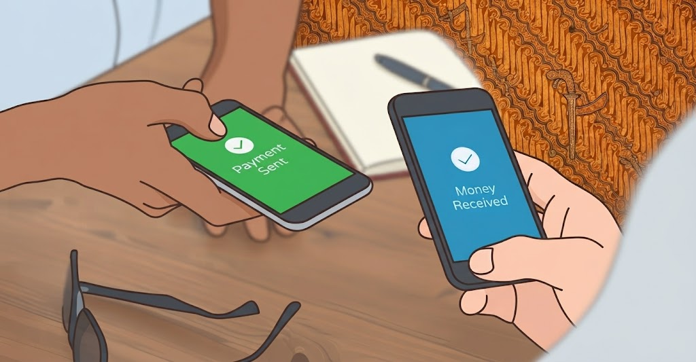
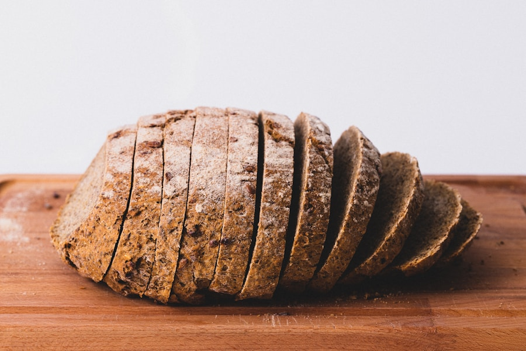
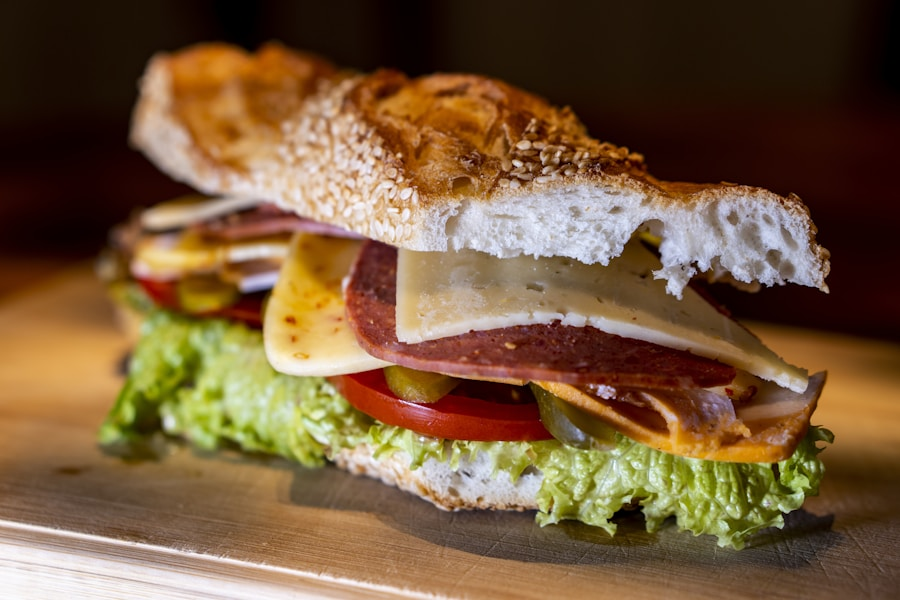

01 · BROWSE
Find something good.
Explore real stalls and products around you.
Every vendor on Fidelx is a real shop you could visit in Otukpo. We just make getting what you want easier — from the first tap to the moment it reaches your door.
Fidelx takes the little pieces of a market trip — finding the right seller, checking the price, paying, getting it home — and brings them into one simple flow.
You stay in control. You see what you're buying, what you're paying, and where your order is.
No mystery status screens. No guessing what happens next. Just a clear handoff from your screen to your door.
Explore real stalls and products around you.
Item cost, fees and delivery are clear before you commit.
Follow your rider as the distance closes.
Your order arrives where you asked it to.
Your order should not become more expensive between the product page and your doorstep. Fidelx shows the important numbers before you pay.
When your order is moving, you should know where it is. The live map gives you a real sense of the distance between the rider and your door.

PAYMENT PROTECTIONPayment is part of the handoff, not the end of the conversation. The platform is designed around confirmation and accountability.
If an item is missing, wrong, or an order never arrives, there is a clear path to raise it. No endless chasing.
Read the FAQs →A clear window to report a problem after delivery.
Disputes can be reviewed instead of being dismissed automatically.
Your order, payment and delivery details stay connected.
The point is resolution — not sending you in circles.

BAKERYFresh bread & pastries
SNACKSFor the little cravingsFind something good from a stall near you and get it brought to your door.
Order from Wadata →